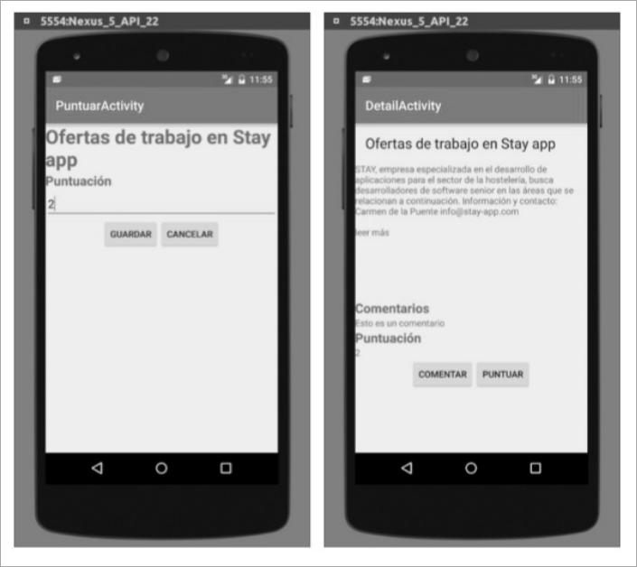

Examen 2016 — Parcial 2
Problema 1
En un programa existe una zona crítica especial, llamémosla “supersticiosa”, en la que puede haber cualquier número de hebras, siempre que no sean trece.
- (a) (5 puntos) Se pide realizar una clase sincronizada (según el esquema que da a continuación) que realice tal protocolo de sincronización. Para simplificar el código, no tenga en cuenta la excepción que pueda presentarse en la operación wait().
package es.upm.dit.adsw.super;
public class Supersticiosa {
// ...
// quiero entrar en la zona crítica
public synchronized void entrar() {
// ...
}
// quiero salir de la zona crítica
public synchronized void salir() {
// ...
}
}
Mostrar solución
package es.upm.dit.adsw.super;
public class Supersticioso {
// número de peticiones de entrada a la R.C.
// menos número de peticiones de salida de la R.C.
private int n = 0;
// quiero entrar en la zona crítica
public synchronized void entrar() {
n++;
while (n == 13) {
try {
wait();
} catch (InterruptedException ignored) {
}
}
notifyAll();
}
// quiero salir de la zona crítica
public synchronized void salir() {
n--;
while (n == 13) {
try {
wait();
} catch (InterruptedException ignored) {
}
}
notifyAll();
}
}
Otra posible solución para una interpretación diferente del enunciado es:
public class Supersticioso {
private int nDentro = 0;
public synchronized void entrar() {
while (nDentro + 1 == 13) {
try {
wait();
} catch (InterruptedException ignored) {
}
}
nDentro++;
}
public synchronized void salir() {
nDentro--;
notifyAll();
}
}
Problema 2
Queremos ampliar la práctica 7-8 de forma que junto con el detalle de cada noticia, cada usuario pueda valorarla o hacer un comentario. No necesita el código de la práctica para realizar este problema.
A continuación se le muestra una secuencia del uso de la nueva pantalla. El usuario parte de DetailActivity, donde ve la noticia (título y descripción) y aparecen los comentarios y la puntuación vacíos, junto con dos botones (Comentar y Puntuar).
Si pincha en Comentar, va a la segunda pantalla (ComentarActivity), donde rellena el comentario y puede dar a Guardar o Cancelar. En ambos casos volverá a DetailActivity. En la imagen se muestra cómo ha pulsado Guardar y se muestra el comentario que el usuario ha introducido en DetailActivity.

A continuación, suponemos que el usuario da a Puntuar, en que introduce una puntación, y tiene las mismas opciones que en ComentarActivity. Suponemos que ha pulsado Guardar y vuelve a DetailActivity, donde se muestra la puntación asignada.

- (a) (5 puntos) Se pide:
- Programe el código necesario para que DetailActivity tenga el nuevo botón Comentar y realice la funcionalidad descrita cuando se pincha en dicho botón:
-
- Muestre una pantalla ComentarActivity.
-
- Si el usuario pulsa Guardar en dicha pantalla, se vuelve a DetailActivity y se muestra el comentario escrito en la pantalla, junto con la traza informativa “Nuevo comentario”.
-
- Si el usuario pulsa Cancelar en dicha pantalla, se vuelve a DetailActivity y se muestra un Toast y una traza informativa con el contenido “El usuario no ha hecho comentarios”.
-
- Programe el código necesario para que DetailActivity tenga el nuevo botón Comentar y realice la funcionalidad descrita cuando se pincha en dicho botón:
Nota: Suponga que están programados ya todos los layouts, así como las clases ComentarActivity y PuntuarActivity. Use las variables que necesite indicando dónde estarían definidas.
Mostrar solución
public class DetailActivity extends AppCompatActivity {
private static final String TAG = DetailActivity.class.getName();
private static final int COMENTAR = 0;
private static final int PUNTUAR = 1;
private TextView comentarioTextView;
private RssContent.EntryRss entry;
@Override
protected void onCreate(Bundle savedInstanceState) {
super.onCreate(savedInstanceState);
setContentView(R.layout.activity_detail);
Bundle extras = getIntent().getExtras();
if (extras == null) {
Log.e(TAG, "Fallo - Debería recibir la noticia");
finish();
}
entry = (RssContent.EntryRss) extras.getSerializable("entry");
if (entry == null) {
Log.e(TAG, "Entry mal recuperado");
finish();
}
comentarioTextView = (TextView) findViewById(R.id.comentario);
comentarioTextView.setText(entry.comentario);
Button botonComentar = (Button) findViewById(R.id.comentar);
botonComentar.setOnClickListener(new View.OnClickListener() {
@Override
public void onClick(View v) {
Log.d(TAG, "Comentar");
Intent i = new Intent(DetailActivity.this, ComentarActivity.class);
i.putExtra("titulo", entry.title);
startActivityForResult(i, COMENTAR);
}
});
}
@Override
protected void onActivityResult(int reqCode, int resultCode, Intent data) {
switch (reqCode) {
case COMENTAR: {
if (resultCode == RESULT_OK) {
Log.i(TAG, "Nuevo comentario");
Bundle extras = data.getExtras();
String comentario = extras.getString("comentario");
comentarioTextView.setText(comentario);
entry.comentario = comentario;
RssContent.modifyEntryRss(entry); // almaceno cambio
} else {
String msg = "El usuario no ha hecho comentarios";
Log.i(TAG, msg);
Toast.makeText(getBaseContext(), msg, Toast.LENGTH_SHORT).show();
}
break;
}
case PUNTUAR: {
break;
}
default:
Log.e(TAG, "Acción inesperada");
finish();
}
}
}